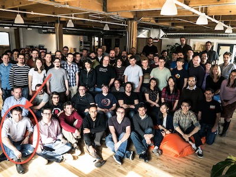
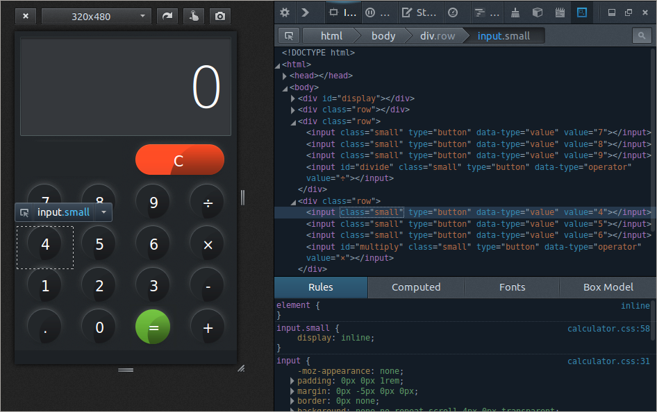
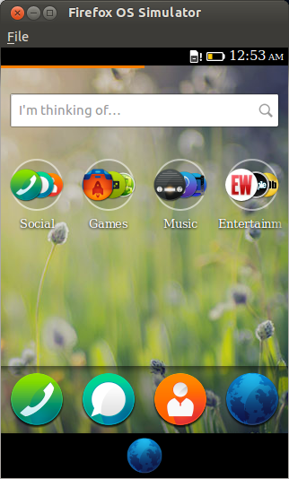
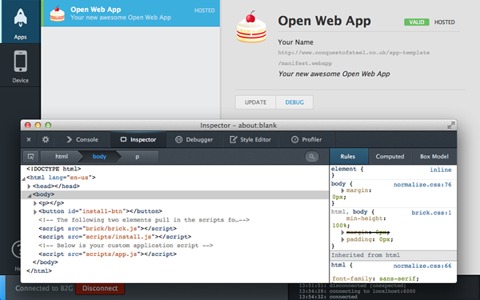

About me

- Member of the Firefox Developer Tools team
- Mainly working on the JS debugger and perf tools
- Got the first working Firefox OS remote debugging session
Developer Tools
- For Web Apps
- For Mobile Apps
Debugging WebGL
WebGL demo
Responsive Design

Test layout behavior in different screen sizes
Simulators

Debug issues related to APIs unavailable on desktop
Remote debugging

Diagnose problems that only manifest themselves in the real thing